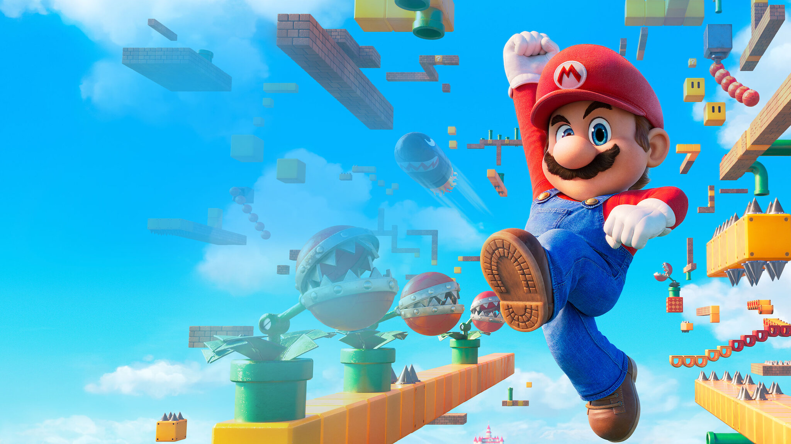

Nintendo anuncia novo Mario para o Switch 2

A Nintendo surpreendeu os fãs ao anunciar um novo jogo da franquia Super Mario desenvolvido exclusivamente para o Nintendo Switch 2.

A Nintendo surpreendeu os fãs ao anunciar um novo jogo da franquia Super Mario desenvolvido exclusivamente para o Nintendo Switch 2.